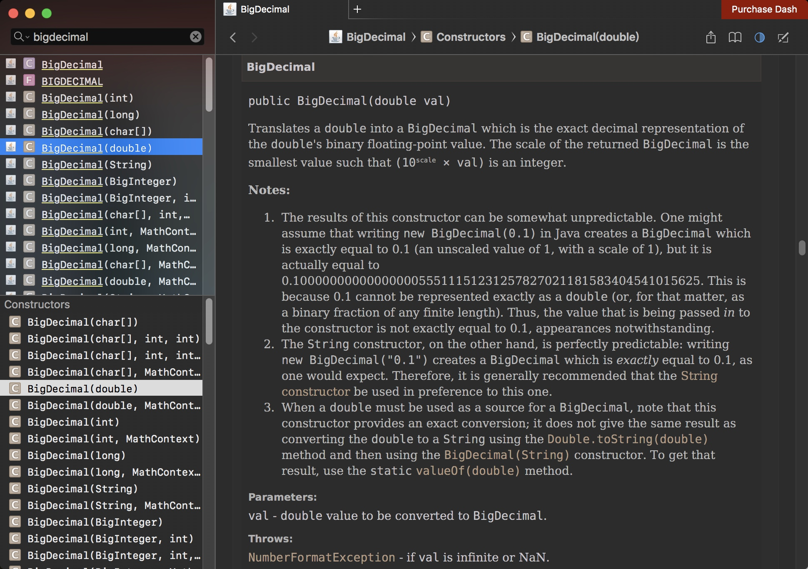

今天做java练习的时候发现这个BigDecimal和double一样不准，本来以为也是个辣鸡东西，后来翻了一下api文档，发现了这个，原来是我的打开方式不对。

BigDecimal
public BigDecimal(double val)将 double 转换为 BigDecimal，后者是 double 的二进制浮点值准确的十进制表示形式。返回的 BigDecimal 的标度是使 (\(10^{scale} × val\)) 为整数的最小值。
注：
此构造方法的结果有一定的不可预知性。有人可能认为在 Java 中写入 new BigDecimal(0.1) 所创建的 BigDecimal 正好等于 0.1（非标度值 1，其标度为 1），但是它实际上等于0.1000000000000000055511151231257827021181583404541015625。这是因为 0.1 无法准确地表示为 double（或者说对于该情况，不能表示为任何有限长度的二进制小数）。这样，传入 到构造方法的值不会正好等于 0.1（虽然表面上等于该值）。 另一方面，String 构造方法是完全可预知的：写入 new BigDecimal("0.1") 将创建一个 BigDecimal，它正好 等于预期的 0.1。因此，比较而言，通常建议优先使用 String 构造方法。 当 double 必须用作 BigDecimal 的源时，请注意，此构造方法提供了一个准确转换；它不提供与以下操作相同的结果：先使用 Double.toString(double) 方法，
然后使用 BigDecimal(String) 构造方法，将 double 转换为 String。要获取该结果，请使用 static valueOf(double) 方法。
参数：
val - 要转换为 BigDecimal 的 double 值。
抛出：
NumberFormatException - 如果 val 为无穷大或 NaN。
从API文档介绍中可以知道，这个double的构造方法他可能无法正确的构建BigDecimal, 如果需要构建建议使用带String的构造方法也可以使用BigDecimal.valueOf(double) 方法来构建, 方法内容如下：
public static BigDecimal valueOf(double val) {
// Reminder: a zero double returns '0.0', so we cannot fastpath
// to use the constant ZERO. This might be important enough to
// justify a factory approach, a cache, or a few private
// constants, later.
return new BigDecimal(Double.toString(val));
}
其实看看可以看到，他也是把double数值先转成String， 然后使用带String的构造器创建对象。
总结：
构建BigDecimal时尽量使用下面两种方法构建，以免发生一些不必要，或难以想象的错误。
public BigDecimal(String val) ;
public static BigDecimal valueOf(double val);
本文由 Sajor
创作，采用 知识共享署名4.0 国际许可协议进行许可
本站文章除注明转载/出处外，均为本站原创或翻译，转载前请务必署名
最后编辑时间为: 2019-07-22T20:04:53+08:00